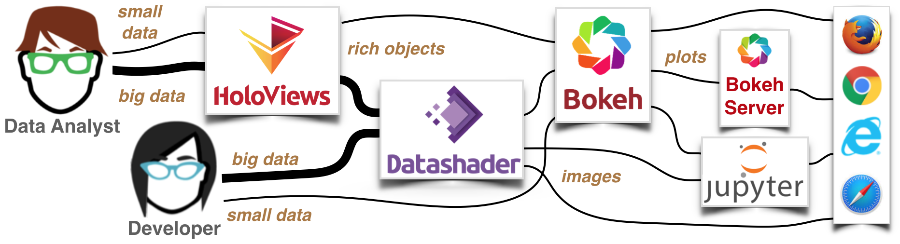

Background: Why PyViz? ¶
Many of the activities of a data scientist or analyst require visualization, but it can be difficult to assemble a set of tools that cover all of the tasks involved. Initial exploration needs to be in a flexible, open-ended environment where it is simple to try out and test hypotheses. Once key aspects of the data have been identified, the analyst might prepare a specific image or figure to share with colleagues or a wider audience. Or, they might need to set up an interactive way to share a set of data that would be unwieldy as a fixed figure, using interactive controls to let others explore the effects of certain variables. Eventually, for particularly important data or use cases, the analyst might get involved in a long-term project to develop a full-featured web application or dashboard to deploy, allowing decision makers to interact directly with live data streams to make operational decisions.
With Python, initial exploration is typically in a Jupyter notebook, using tools like Matplotlib and Bokeh to develop static or interactive plots. These tools support a simple syntax for making certain kinds of plots, but showing more complex relationships in data can quickly turn into a major software development exercise, making it difficult to achieve understanding during exploration. Simple apps can be built using ipywidgets to control these visualizations, but the resulting combinations end up being tightly coupled to the notebook environment, unable to migrate into a standalone server context with an application that can be shared more widely. Bokeh includes widgets that can work in both notebook and server environments, but these can be difficult to work with for initial exploration. Bokeh and Matplotlib both also have limitations on how much data they can handle, in part because Bokeh requires the data to be put into the web browser’s limited memory space.
To address these issues, we have developed a set of open-source Python packages to streamline the process of working with small and large datasets (from a few points to billions) in a web browser, whether doing exploratory analysis, making simple widget-based tools, or building full-featured dashboards. The libraries in this ecosystem include:
- Panel : Assembling objects from many different libraries into a layout or app, whether in a Jupyter notebook or in a standalone serveable dashboard
- Bokeh : Interactive plotting in web browsers, running JavaScript but controlled by Python
- hvPlot : Quickly return interactive HoloViews or GeoViews objects from your Pandas, Xarray, or other data structures
- HoloViews : Declarative objects for instantly visualizable data, building Bokeh plots from convenient high-level specifications
- GeoViews : Visualizable geographic data that that can be mixed and matched with HoloViews objects
- Datashader : Rasterizing huge datasets quickly as fixed-size images
- Param : Declaring user-relevant parameters, making it simple to work with widgets inside and outside of a notebook context
These projects can be used separately or together in a wide variety of different configurations to address different needs. For instance, if we focus on the needs of a data scientist/analyst who wants to understand the properties of their data, we can compare that to the approach suggested for a software developer wanting to build a highly custom software application for data of different sizes:
{kind=link}
Here Datashader is used to make large datasets practical by rendering images outside the browser, either directly for a programmer or via a convenient high-level interface using HoloViews (or hvPlot), and the results can be embedded in interactive Bokeh plots if desired, either as a static HTML plot, in a Jupyter notebook, or as a standaline application.
Behind the scenes, these tools rely on a wide range of other open-source libraries for their implementation, including:
- Pandas : Convenient computation on columnar datasets (used by HoloViews and datashader)
- Xarray : Convenient computations on multidimensional array datasets (used by HoloViews and Datashader)
- Dask : Efficient out-of-core/distributed computation on massive datasets (used by Datashader)
- Numba : Accelerated machine code for inner loops (used by Datashader)
- Fastparquet : Efficient storage for columnar data
- Cartopy : Support for geographical data (using a wide range of other libraries)
The PyViz tutorials will guide you through the process of using these tools together to build rich, high-performance, scalable, flexible, and deployable visualizations, apps, and dashboards, without having to use JavaScript or other web technologies explicitly, and without having to rewrite your code to move between each of the different tasks or phases from exploration to deployment. In each case, we’ll try to draw your attention to libraries and approaches that help you get the job done, which in turn depend on many other unseen libraries in the scientific Python ecosystem to do the heavy lifting.
Demos ¶
To give you an idea what sort of functionality is possible with these tools, you can check out some of these links first if you wish:
Getting started ¶
First, you should browse through the already-run versions of the PyViz tutorials to see what they cover and how it all works. But everything on this website is a Jupyter Notebook that you can run yourself, once you follow the installation instructions, so the next step is to try it all out and have fun exploring it!